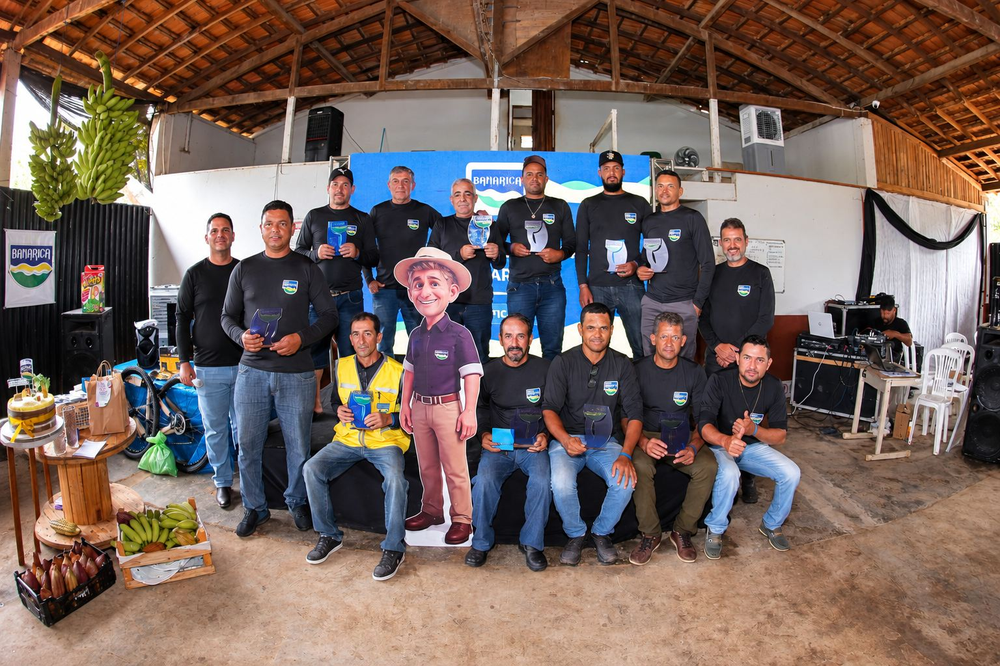
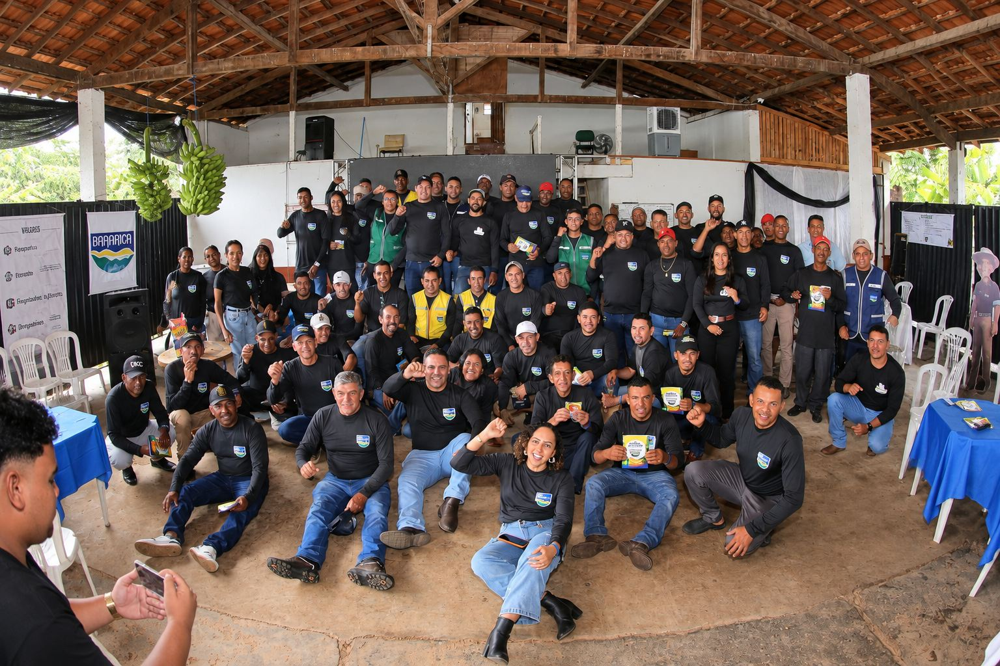
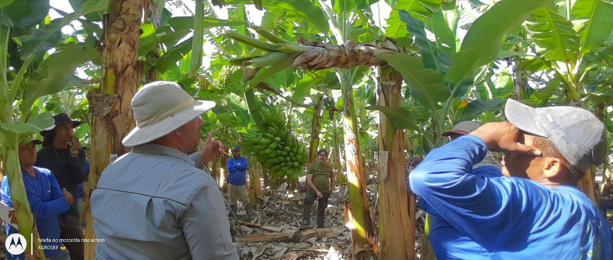
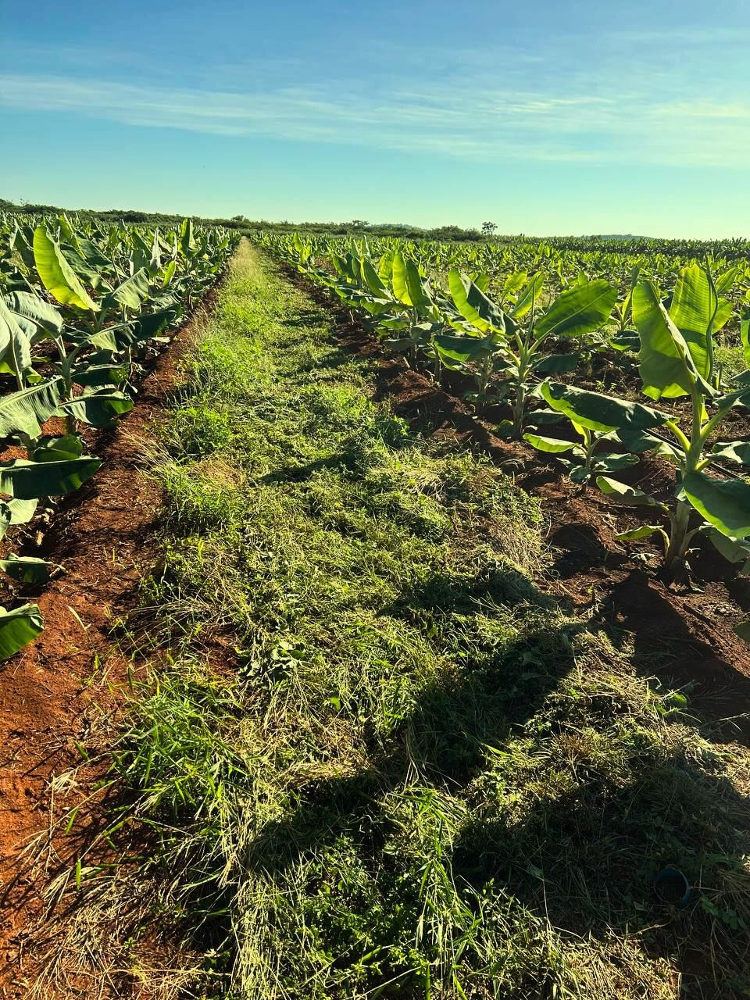
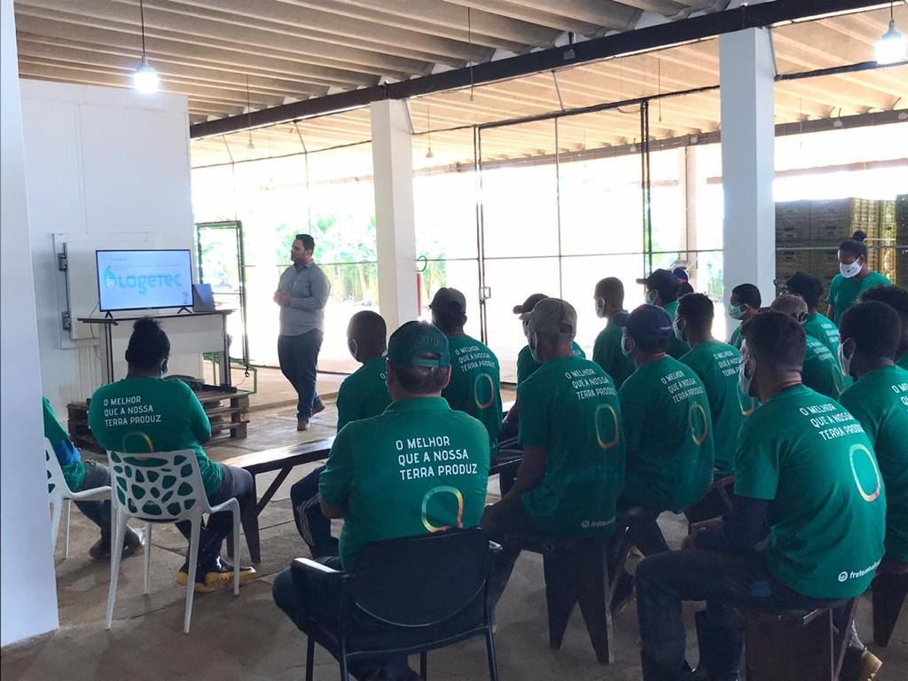

Curso Banana 360 – Método P3
Aulas gravadas com o passo a passo da metodologia P3 e ferramentas para usar no dia a dia com a sua equipe.
A MusaTec é uma consultoria agronômica especializada em banana. Trabalhamos lado a lado com o produtor, no campo e na gestão, para produzir mais, gastar melhor e lucrar mais.
A MusaTec Ltda é uma empresa de consultoria agronômica de abrangência nacional. Atuamos de forma personalizada, lado a lado com o cliente, para alcançar os resultados desejados e gerar valor para o negócio com inovação e eficiência.
Com foco no cultivo da banana e na gestão prática, aplicamos o conhecimento adquirido com estudo e vivência no campo, construindo estruturas operacionais eficientes e processos que funcionam.
Atendemos cooperativas, produtores e empresas do agronegócio. Nosso diferencial é a formação técnica da equipe, somada à experiência prática do nosso Diretor Executivo como agrônomo, produtor e gestor.
Nosso compromisso vai além da consultoria: trabalhamos para transformar desafios em oportunidades, com tecnologia e métodos testados na prática.

Fomentar a evolução do Agro por meio da inovação e eficiência.
Engenheiro Agrônomo pela Universidade Estadual de Montes Claros (Unimontes), Mestre em Produção Vegetal pelo IF Baiano – Guanambi e MBA em Gestão Empresarial pela FGV. Sócio-diretor da Banarica Ltda, empresa familiar que produz banana desde 1986. Consultor em bananicultura desde 2007, com atuação em todo o Brasil.
Soluções para cada etapa da produção: do plantio à embalagem, da lavoura à gestão. Toque em “Ver vantagens” para saber mais.
Aulas gravadas com o passo a passo da metodologia P3 e ferramentas para usar no dia a dia com a sua equipe.
Diagnóstico e evolução da sua produção com base no método Banana 360, com acompanhamento on-line por 6 meses para colocar a mão na massa.
E-book com todos os Procedimentos Operacionais Padrão de tratos culturais para bananicultura. Um guia prático para organizar a rotina da fazenda.
Treinamentos práticos, com procedimentos simples e fáceis de repetir: POPs de tratos culturais, capacitação de irrigadores, embalagem de frutas, planejamento e rotinas, e liderança para encarregados e gestores.
Palestras sobre toda a cadeia produtiva da banana: fisiologia, nutrição, fitossanidade, mercado e gestão. Levamos conhecimento a produtores de todo o Brasil.
Acompanhamento técnico da lavoura, presencial ou on-line, com relatório técnico a cada visita. Orientamos a implantação, analisamos projetos de terceiros e fazemos recomendações de controle fitossanitário, nutrição, irrigação e manejo.
Visitas técnicas com avaliação e regulagem do sistema de irrigação, avaliação de raízes (DDR, raiz funcional e nematoides) e acompanhamento dos dados de campo em planilhas.
Planejamento da estrutura operacional, avaliação de desempenho da equipe, treinamento de colaboradores e definição de gratificações. Relatório personalizado com indicadores a cada visita.
Diagnóstico dos pontos de maior impacto na produção: irrigação, raízes e nutrição. Usamos o DDR (metodologia própria), avaliação de irrigação e amostragem de solo e folha, com laudo técnico e plano de ação.
Cadastros e documentos junto ao IMA e emissão do Certificado Fitossanitário de Origem (CFO), com registro no livro de acompanhamento técnico. Mais de 10 anos de experiência.
Mapeamento e implantação de processos administrativos e operacionais, análise financeira, orçamento anual e gestão de pessoas. Modelo aplicado há mais de 15 anos na Banarica.
Planejamento para aumentar a produção com eficiência e profissionalizar o negócio. Prevemos, controlamos e otimizamos o uso dos insumos que impactam o resultado.
Para empresas de defensivos e fertilizantes. Realizamos experimentos em campo, com base estatística, para avaliar desempenho, dose e resposta de produtos, com relatório técnico final.
Estou satisfeito com o atendimento. Indicaria certamente. O Gabriel é show!
Está indo bem, mudou muito a forma de conduzir a produção.
A consultoria está satisfatória, sim.
Estamos gostando muito! Indicaria a MusaTec, sim.
Muito bom! Está tudo tranquilo com a consultoria.
Trabalho feito onde a produção acontece: na lavoura, no galpão e junto das equipes.




Chame no WhatsApp e fale direto com a nossa equipe. Sem compromisso.
Chamar no WhatsApp